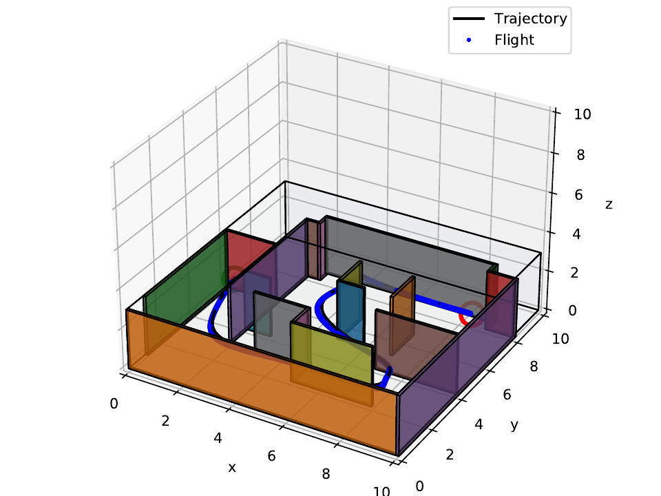
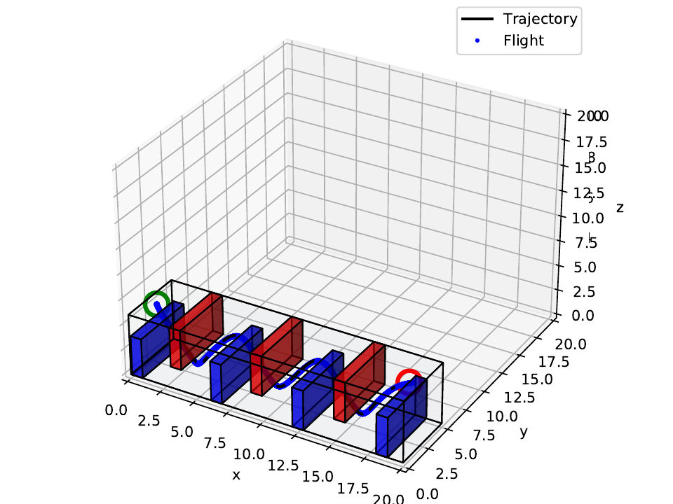
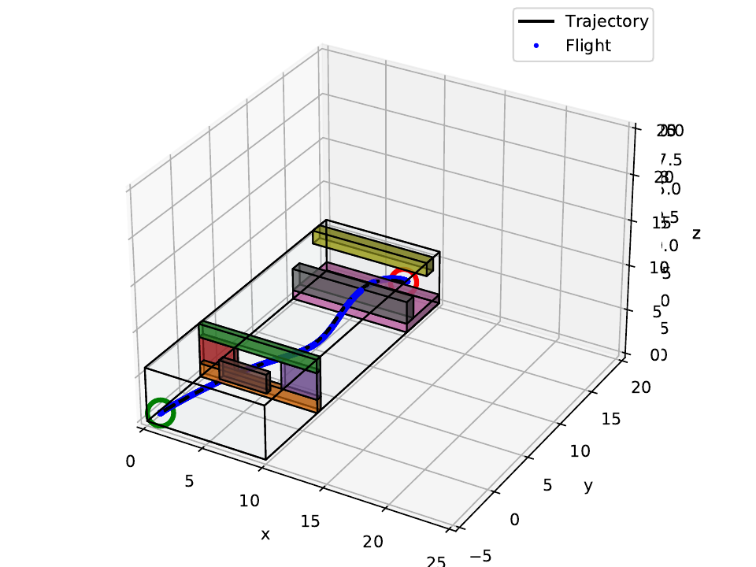
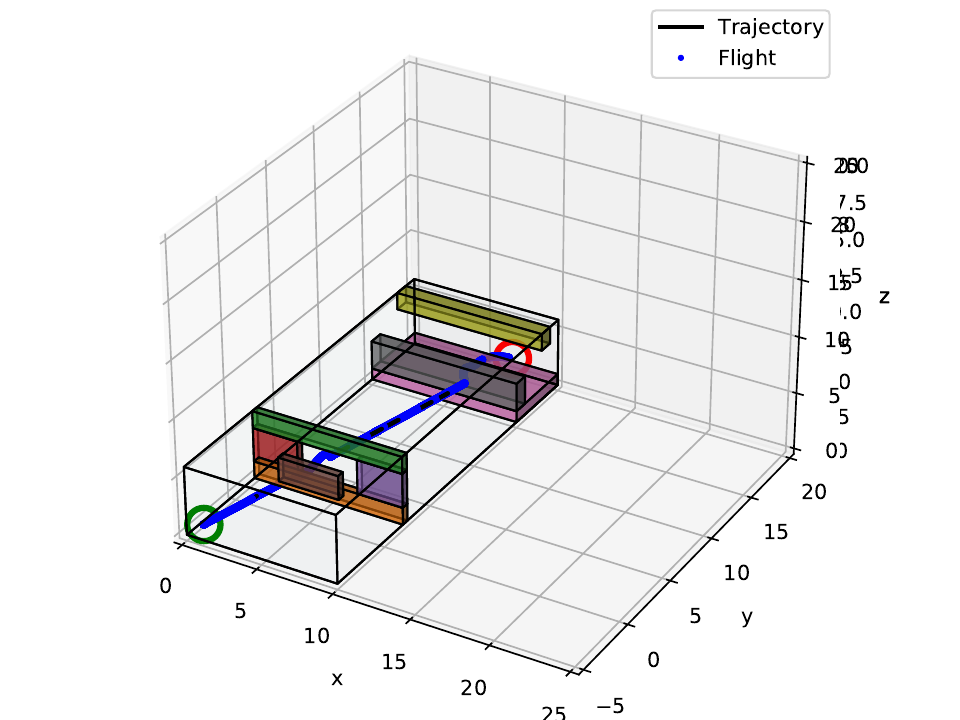
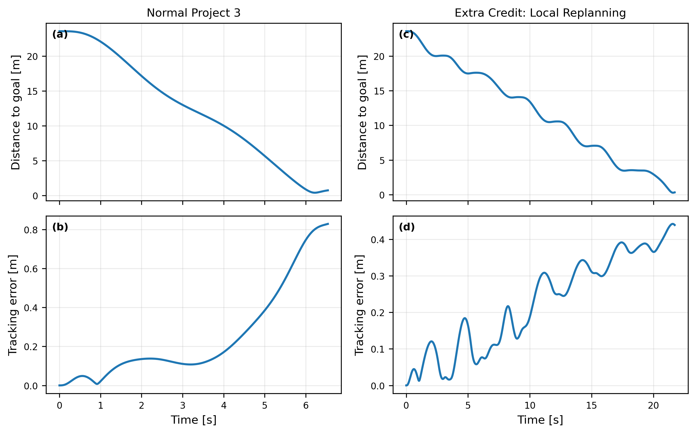

A complete GPS-denied autonomy stack — integrating an error-state Kalman filter for visual-inertial odometry, A* graph search on a 3D occupancy grid, quintic minimum-jerk trajectory generation, and an SE(3) geometric controller — all running in closed loop with estimated state instead of ground truth. Extra credit adds online local replanning with a 3.5 m sensor horizon.
Projects 1 and 2 solved halves of autonomous flight in isolation: planning and control with ground-truth state, and state estimation without full autonomy. Project 3 closes the loop — the controller now receives VIO estimates instead of truth, and every component interacts. A trajectory that is feasible under perfect feedback can fail under estimation drift, and aggressive accelerations worsen the very estimation errors they depend on.
The key design choice throughout was to prioritize stability over speed: conservative controller gains, iterative time-stretching on generated trajectories, and a 1.35× time scale factor for the EC local planner. This sacrifices raw competition time in exchange for the estimator staying coherent through the full flight.
Eight steps, running in a closed loop at sensor rate. The pipeline is the same in both normal and EC modes — the EC version adds a replanning check and local goal selection between steps 2 and 6.
The standard planner passed all 6 maps cleanly. The EC local replanner passed 3 maps safely — the same 3 where the full-world planner produced relatively short, open paths. Slalom reached the goal but the true flight path grazed an obstacle. Stairwell and switchback timed out — conservative 1.35× timing adds overhead that accumulates over long, constrained routes.
| Map | Normal time (s) | Normal dist (m) | Normal | EC time (s) | EC dist (m) | EC |
|---|---|---|---|---|---|---|
| maze | 9.08 | 22.31 | pass | 12.39 | 11.98 | pass |
| over-under | 10.64 | 31.97 | pass | 31.10 | 29.77 | pass |
| window | 6.49 | 25.00 | pass | 23.77 | 25.66 | pass |
| slalom | 19.54 | 54.83 | pass | 42.50 | 54.39 | collision |
| stairwell | 14.79 | 35.20 | pass | — | — | timeout |
| switchback | 15.35 | 71.48 | pass | — | — | timeout |





Estimation, planning, and control are coupled. A trajectory that looks geometrically valid can still fail because aggressive acceleration worsens VIO drift, which worsens tracking error, which causes the quadrotor to clip obstacles the planner had cleared. The right level of aggression depends on the estimator's noise tolerance, not just the dynamics.
Absolute time is non-negotiable for local replanning. The simulator queries the trajectory with absolute simulation time. Each new local segment is naturally generated in relative time. Forgetting to shift segments caused the simulator to interpret local subgoal endpoints as the mission endpoint and terminate early — a silent correctness bug that looked like a success.
State continuity across replan boundaries is unsolved. Replanning from a nonzero-velocity state can produce zig-zagging if the new polynomial is initialized inconsistently. Passing current velocity into the new segment and enforcing a minimum first-segment time helps, but the right solution is to blend segments before the active one ends, preserving velocity continuity at the seam.